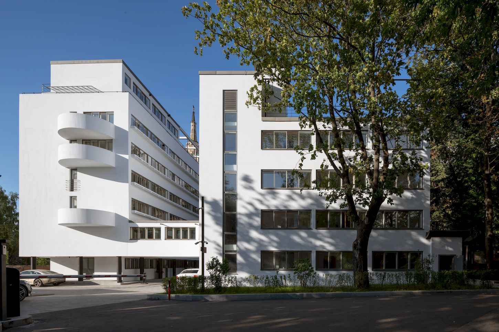

Дом Наркомфина
Дом Наркомфина — один из знаковых памятников архитектуры советского авангарда и конструктивизма. Построен в 1928—1930 годах по проекту архитекторов Моисея Гинзбурга, Игнатия Милиниса и инженера Сергея Прохорова для работников Народного комиссариата финансов СССР (Наркомфина). Автор замысла дома Наркомфина М. Я. Гинзбург определял его как «опытный дом переходного типа». Дом находится в Москве по адресу: Новинский бульвар, дом 25, корпус 1.
С начала 1990-х годов, дом находился в аварийном состоянии, был трижды включён в список «100 главных зданий мира, которым грозит уничтожение». В 2017—2020 годах отреставрирован[5][6] по проекту АБ «Гинзбург Архитектс», функционирует как элитный жилой дом.
История создания дома Наркомфина
Из всех различных индивидуумов и групп, занимавшихся реформированием повседневной жизни и консолидации социализма в 1920-е годы архитекторы занимали исключительное положение. Архитектурная инновация Дома Коммуны представляет наиболее полную попытку осуществления реформирования быта и консолидации советского социализма. Самой влиятельной группой архитекторов в этой области являлась ОСА (Объединение Современных Архитекторов, возглавляемая М. Я. Гинзбургом). В то время как прочие реформаторы быта пытались внедрить реформистские практики в остатки существующих дореволюционных форм, группа ОСА (образована в 1925 году М. Я. Гинзбургом и братьями Весниными), более известная как конструктивисты, пыталась решить проблему «нового быта» напрямую созданием принципиально новой архитектуры и материальной культуры, основанных на коммунистических отношениях производства и потребления.
Дом Наркомфина, или 2-й дом Совнаркома (СНК) РСФСР стал одним из экспериментальных домов, построенных по результатам теоретических исследований Секции типизации Стройкома РСФСР, созданной по инициативе М. Я. Гинзбурга и работавшей под его руководством в 1928—1929 годы (в работе также участвовали входившие в объединение ОСА: М. О. Барщ, В. Н. Владимиров, А. Л. Пастернак, Г. Р. Сум-Шик). Задачей Стройкома являлось разработка и проектирование новых форм жилья для нового советского общества. Как сказано в монографии Йоганнеса Крамера[de] «Das Narkomfin Kommunehaus In Moskau 1928—2012», «аналогичные устремления существовали в то же время и в Германии, где этими вопросами занимался Исследовательский институт экономической эффективности в строительстве и жилищном хозяйстве (RfG[de]), хотя полученные им результаты были менее радикальными и менее призрачными».
Учреждению секции предшествовала работа в 1928 году комиссии Стройкома по отбору типовых проектов жилья для строительства. Комиссия пришла к выводу, что большинство известных на тот момент проектов не могут быть использованы как типовые, поэтому для разработки типовых проектов была создана Секция типизации. Подготовкой для работы над новым форматом жилья также стала работа над домом Госстраха на Малой Бронной (1926—1927, М. Я. Гинзбург и В. Н. Владимиров) и конкурс на «эскизный проект жилого дома трудящихся», проведённый журналом «Современная архитектура» (Гинзбург подал на конкурс проект «Коммунального дома А-1»). Выставка проектов конкурса состоялась в июне 1927 года.
Идеология «опытного коммунального дома переходного типа»
Идеи, связанные с планировочной и объёмной структурой, также как и с функциональным наполнением дома, изложены в публикациях журнала «Современная архитектура», докладе М. Я. Гинзбурга на пленуме Стройкома, а также в его книге «Жилище».
Секция типизации Стройкома РСФСР ставила перед собой задачи разработки экономичного решения проблемы жилья без потери его качества и даже с повышением комфорта, в частности, благодаря естественному освещению не только жилых, но и подсобных зон, в т. ч. коридоров.
Дом Наркомфина переходного типа (от «буржуазного дома» к «социалистической коммуне») хотя и содержал в себе ранее существовавшие «буржуазные» квартиры (ячейки K и 2F), был структурирован таким образом, чтобы облегчить переход индивида к полностью социализированной жизни (в ячейках F).
«мы сочли совершенно необходимым создание ряда моментов, стимулирующих переход на более высокую форму социально-бытового уклада, но не декретирующих этот переход».
- жилого, на 50 семей и приблизительно 200 человек (построен);
- коммунального с кухней, двумя столовыми — крытой внутри и летней на крыше, а также спортзалом и библиотекой (построен, кухня работала в 1930-е годы, продавая еду на вынос; столовая не заработала);
- отдельное круглое в плане здание детского сада с яслями планировалось в центральной части парка (не реализовано; к 1934 году детский сад разместился в коммунальном корпусе; в книге «Жилище» Гинзбург писал: «вся свободная площадь коммунального корпуса занята детским садом»[34]; просуществовал до 1941 года);
- «служебный двор», включающий механическую прачечную, сушилку и гараж, был обращён к Новинскому бульвару (реализован; прачечная функционировала, она обслуживала жильцов в 1930-е годы).
«В виду неровности участка, вызывающего в подобных случаях устройство большой поверхности цоколя, в настоящем случае дом поднят в большей своей части на высоту 2,5 метров на отдельных столбах, что является более экономичным и, кроме того, сохраняет нетронутой площадь парка».
Известные жители
- Антонов-Овсеенко Владимир Александрович, кв. 48 — нарком юстиции РСФСР, с женой Софьей Ивановной Левиной. Расстрелян 10.02.1938 года, жена расстреляна 08.02.1938 года.
- Бган Ольга Павловна, кв. ? — актриса театра и кино.
- Бухарцев Дмитрий Павлович, кв. 29 — кандидат экономических наук, корреспондент газеты «Известия» в Германии в 1934—1936 годах, сотрудник ОГПУ-НКВД[104]; расстрелян 03.06.1937 года.
- Вишневский Александр Александрович, кв. 35 (5 этаж) — доктор медицинских наук (1936), позднее главный хирург Советской армии.
- Воскресенский Кирилл Александрович, кв. ? — учёный-биолог, основатель Беломорской биологической станции (1938).